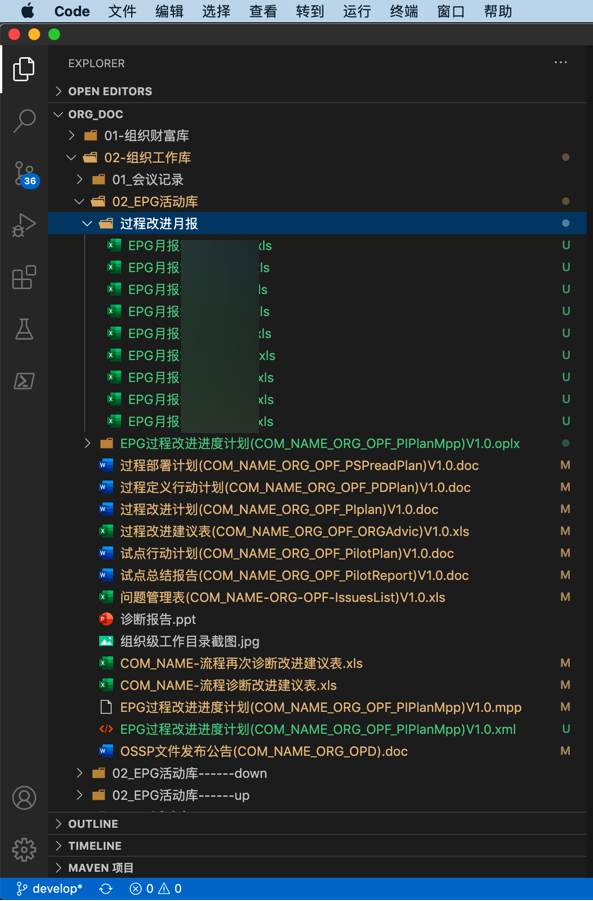
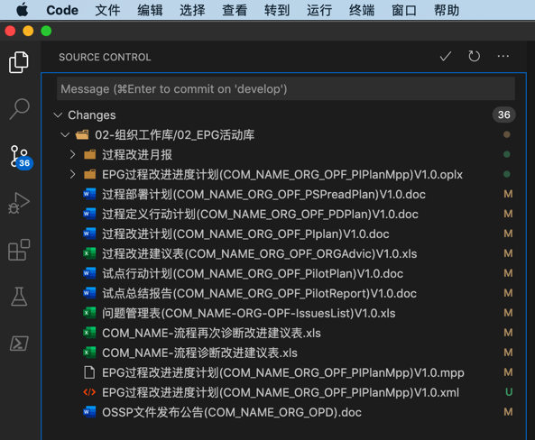
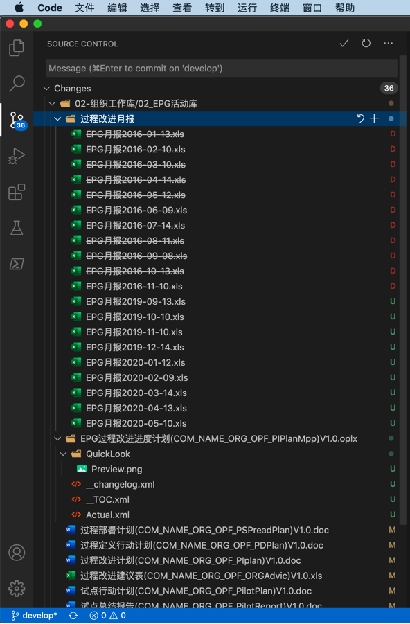
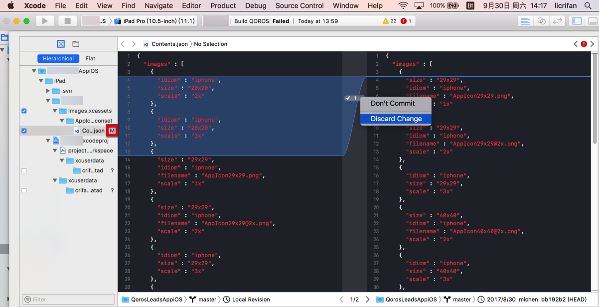
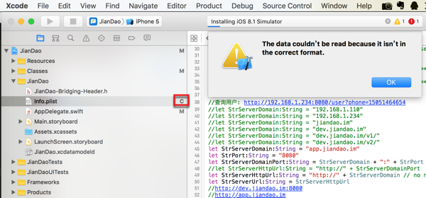
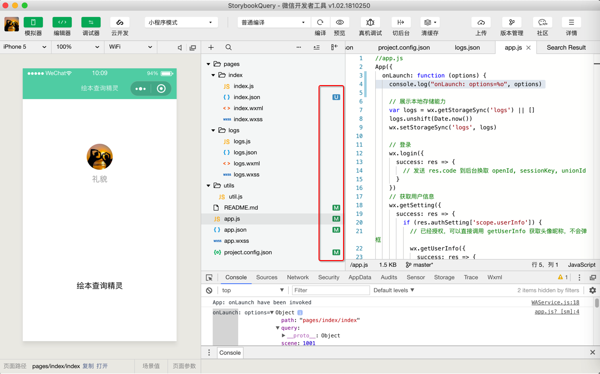
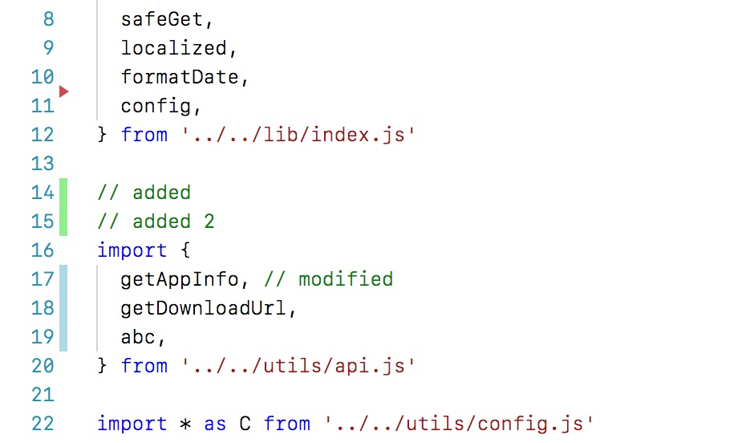
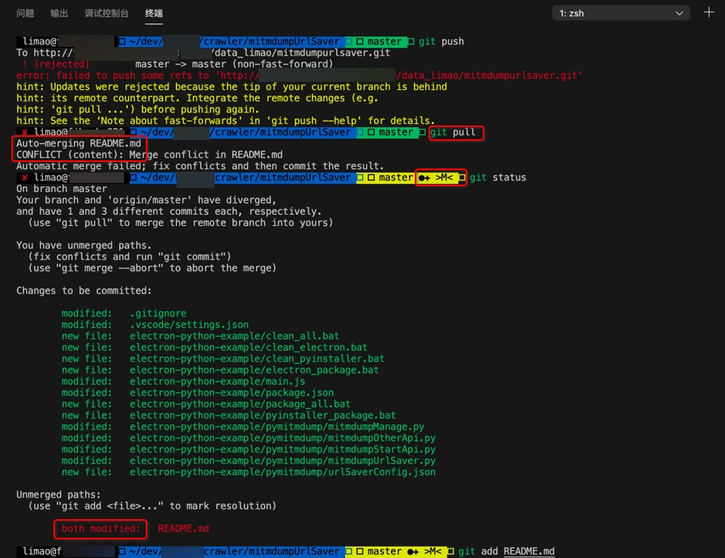

相关支持
git中文件的不同状态
git中，文件被改动后，会有多种不同的状态，往往用固定的字母去表示：
| 图标 | 含义 |
|---|---|
| U | 文件未追踪（Untracked） |
| A | 新文件（Added, Staged） |
| M | 文件有修改（Modified） |
| +M | 文件有修改（Modified, Staged） |
| C | 文件有冲突（Conflict） |
| D | 文件被删除（Deleted） |
对应的不同的支持git的工具中的效果：
VSCode
- U=文件未追踪
- 
切换到git视图，且排序是按照目录树 的效果是：
- M = 文件有修改
- 
以及：
- D = 文件被删除
- 
XCode
- M=文件有修改
- 
- C=文件有冲突
- 
微信小程序开发工具
官网举例：
A=新文件+M=有修改++M=有修改且暂存+U=未追踪

自己实例：
M=有修改+U=未追踪- 
小程序中对应颜色表示额外信息：
| 图标 | 含义 |
|---|---|
| 小红点 | 目录下至少存在一个删除状态的文件 |
| 小橙点 | 目录下至少存在一个冲突状态的文件 |
| 小蓝点 | 目录下至少存在一个未追踪状态的文件 |
| 小绿点 | 目录下至少存在一个修改状态的文件 |
小程序代码
对应的小程序的代码中的带颜色的线条，表示对应的含义：
| 样式 | 含义 |
|---|---|
| 蓝色线条 | 此处的代码有变动 |
| 绿色线条 | 此处的代码是新增的 |
| 红色三角箭头 | 此处有代码被删除 |
举例：

zsh
zsh在安装了插件后，对于git支持的很好
甚至包括：当auto-merge出现conflict冲突时，git status的前缀都自动显示出 >M<：
master ●✚ >M< git status

表示有内容需要合并（后才能再去提交）
此处表明，细节支持的很到位。